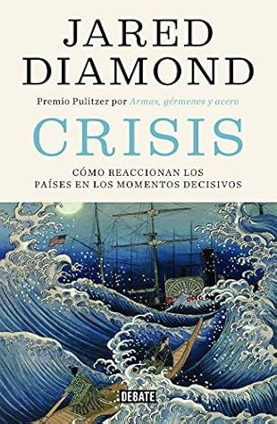

Crisis: Cómo reaccionan los países en los momentos decisivos (Spanish Edition)
Reseña por Jorge I. Zuluaga

Ver reseña en GoodReads (necesita cuenta)
Llegué a este libro después de leer "Armas, gérmenes y acero" (aquí mi reseña), que con "Colapso" y "Crisis" forman la trilogía de "best sellers" de Jared Diamond.
No lo tenía en mi lista de lecturas inmediatas hasta que un buen amigo, Juan Camilo Vélez, compañero de la obsesión por la lectura, me invitó a que lo leyéramos simultáneamente con el objetivo de tertuliar al final. Es mi primera experiencia leyendo un libro con compañía y agenda (bueno, tratando de hacerlo) y ha sido mejor de lo que pensaba. ¡Les recomiendo el ejercicio!
El libro comienza desanimando a quienes, como yo, amamos la historia pero no los libros de autoayuda. El primer capítulo, que está dedicado a las crisis personales, parece más un texto de psicología (no muy técnico) con listas de cosas por hacer cuando se enfrenta una crisis.
Con un poco de paciencia, sin embargo, descubres el valor de este primer capítulo y de la agenda general que se ha propuesto Diamond (y que manifiesta claramente en el prólogo, pero que no logré apreciar hasta bien entrada la lectura) una vez empiezas a leer los capítulos que le suceden.
La idea de Diamond es interesante y me atrevería a decir original (no soy experto ni en psicología ni en historia política, así que puede que el esfuerzo de Diamond se haya hecho antes): comparar, a través de casos específicos, las crisis nacionales y la manera como se han resuelto y se podrían resolver con las crisis personales. Al hacerlo, elabora una lista de 12 factores que influyen en la solución de las crisis y se dedica por el resto del libro a "demostrar" que todas las crisis presentadas pueden analizarse a la luz de esos factores.
El resultado es genial.
Para empezar, Diamond logra —como lo hace en sus otros libros— con una prosa fluida y no muy académica (que es fundamental tratándose de un libro de divulgación) describir parte de la historia "reciente" (en algunos casos casi toda ella) de, por un lado, algunos países relativamente desconocidos: Finlandia, Australia, Indonesia, Japón, Chile; y por el otro, países cuya historia ha sido mejor divulgada: Alemania y Estados Unidos. El resultado, para quienes gozamos la historia, es maravilloso: conocer historias increíbles que están medio escondidas entre las que repiten una y otra vez los medios y los libros de texto.
Como latinoamericano, debo confesar, no sin alguna vergüenza, que es la primera vez que leo sobre Chile y la crisis de casi 30 años que vivió en el último tercio del siglo XX. Viviendo en un país, Colombia, convulsionado por fuerzas similares —una izquierda marxista sedienta de poder absoluto (alzada en armas aquí, no en Chile), una derecha brutal y asesina ("escondida" aquí, no en Chile) y un modelo económico que solo ha servido para amplificar las desigualdades socioeconómicas, el pérfido neoliberalismo (primero en Chile y después aquí)—, creo que sería nuestra obligación conocer mejor la historia de ese país. Casi debería ser análisis obligado en el colegio. De la misma manera que se nos repite con vehemencia la fatídica historia de Venezuela (con su gobierno pseudosocialista autoritario), no entiendo por qué no estudiamos más la historia de Chile.
Me sorprendió también la historia de Australia. No quiero arruinar la lectura, pero siempre pensé en ese país como el epítome del progresismo. Estando tan lejos del corazón neurálgico del imperio en el que no se pone el Sol, creería uno que su historia estaba dominada, como en los Estados Unidos, por políticos y políticas liberales muy diferentes a las del Reino Unido. Fue increíble descubrir que la verdad, hasta hace apenas unas décadas, era muy distinta. Les dejo la inquietud para que lo descubran por ustedes mismos.
Quedé gratamente admirado de Finlandia y su difícil historia reciente. Lo que sabemos la mayoría del país escandinavo no pasa de ser que es la nación donde nació Nokia y que tiene la educación más "calidosa" del mundo. Con Diamond descubrí que este país, que habla una lengua extraña y gutural, ha tenido que superar dificultades impresionantes y, en su pequeñez, se ha convertido en una de las naciones más avanzadas del planeta (no sin dejar los "pelos en el alambrado" de la historia violenta del siglo XX).
De Indonesia no sabía ABSOLUTAMENTE NADA. A duras penas, como el peor de los "gringos analfabetos", sabía dónde estaba el país (por allá en Asia, me decía, donde hay terremotos y tsunamis inmensos). Descubrí que es un país "disjunto", regado por cientos de islas donde hablan cientos de lenguas, algunas tan diferentes entre sí como lo son cualquiera de ellas del español o del inglés, y con una historia reciente también convulsa. Yo, que vivo en un país en guerra, creía que solo Colombia había vivido atrocidades en tiempos recientes. Las que vivió Indonesia en el 65 parecen empequeñecer nuestra guerra a fuego lento.
Ya en "Armas, gérmenes y acero" me había acercado a la historia antigua de Japón. ¡Sorprendente! En este libro la sorpresa no es menor cuando Diamond cuenta con muchos detalles la historia reciente y contemporánea de una isla que (no lo sabía) es tan grande como Inglaterra y que es como un espejo de esta última. Mis respetos a los japoneses, pero también mi desconfianza (al país como un todo, no a ningún japonés en particular). Ese país, que hoy tanto admiramos por su desarrollo científico e industrial, tuvo sus períodos históricos muy oscuros en los que hoy, a diferencia por ejemplo de Alemania, se niega a admitir más abiertamente una responsabilidad que le reclaman sus vecinos, especialmente Corea y China. Lean "Crisis" para que se enteren de las brutalidades de las que hoy se acuerdan con odio estos últimos dos países y que seguramente, en un conflicto futuro, pondrán (o ya tienen) a Japón en el centro de una diana geopolítica. ¡Impresionante!
La historia de Alemania la conocemos (o creemos conocerla bien). El recuento que hace Diamond sobre el período posterior a la Segunda Guerra Mundial, que ha sido representado en algunas películas y novelas, es descrito aquí con detalles que creo desconocemos la mayoría. Hay que leerlo para admirar (o no) a ese país rodeado de por lo menos ocho países a los que no les ha simpatizado casi nunca.
A Estados Unidos le dedica Diamond dos capítulos enteros. No es para menos. No solo es su país de origen, sino que, además, siendo el país más poderoso (económica y militarmente) del mundo, lo que pase allá nos afecta a todos. De nuevo, lo que creías saber muy bien sobre el país del Norte se ve renovado por esta lectura actualizada. Me sorprendió (como creo que lo harán muchos) que no le dedique muchas páginas a la desastrosa administración Trump. Tal vez lo hace para no levantar ampolla entre los sectarios seguidores del tirano, o tal vez para vender libros también entre ellos (aunque todos sabemos que la mayoría de los que respaldan a Trump y su chauvinismo y racismo delirante, difícilmente alcanzarán a leer, y si lo hacen, dudo que entiendan un libro como el de Diamond). Al final, queda claro que la USA enfrenta hoy una crisis a fuego lento y que tal vez arrastre consigo al resto del mundo mientras finaliza la era de los Estados Unidos y comienza, quizás, la era de China.
El mejor capítulo es el final. Dedicado a las crisis en ciernes: el problema ambiental (cambio climático), el peligro (renovado) de una confrontación nuclear, las fuentes alternativas de energía, los escasos recursos de la Tierra y su administración futura, y la perniciosa desigualdad. Un análisis conciso pero muy claro de estas crisis. Debería leerse incluso solo, si no se animan con todo el libro.
No soy político (ni aspiro a serlo) ni sociólogo, pero creo que lo que consigue construir Diamond en este prolongado ensayo podría ser de gran valor para todos los países en crisis, incluyendo, por supuesto, mi país. Qué bueno que los gobernantes de esta "republiqueta", que se debate entre la guerra y la paz, entre la desigualdad y la riqueza cultural, entre la destrucción del medio ambiente y una de las mayores riquezas naturales, le pegaran una leidita a "Crisis" y aplicaran una fracción de lo que se aprende de este libro.
¡Lean a Diamond!